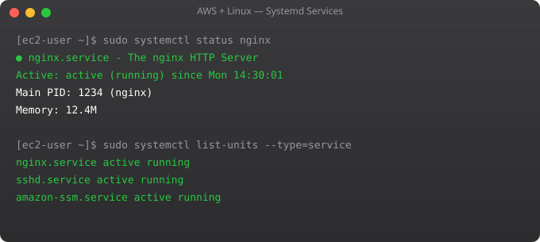

Amazon S3 is the most popular AWS service and one of the most used storage systems in the world. It stores everything from user uploads to database backups to static website assets to ML training data. Mastering the S3 CLI means you can automate backups, deploy static websites, manage application assets, and integrate cloud storage into any workflow directly from the Linux command line.
sudo apt install awscli -y # Or: pip3 install awscli
aws configure
# AWS Access Key ID [None]: YOUR-ACCESS-KEY
# AWS Secret Access Key [None]: YOUR-SECRET-KEY
# Default region name [None]: ap-south-1
# Default output format [None]: json
# Verify
aws sts get-caller-identity
# Multiple profiles
aws configure --profile production
aws s3 ls --profile production# Create a bucket (globally unique name)
aws s3 mb s3://srjahir-backups-2025
# List buckets
aws s3 ls
# List objects in bucket
aws s3 ls s3://my-bucket
aws s3 ls s3://my-bucket/backups/ --recursive
# Upload file
aws s3 cp file.txt s3://my-bucket/file.txt
aws s3 cp ./logs/app.log s3://my-bucket/logs/app.log
# Download file
aws s3 cp s3://my-bucket/file.txt ./
# Upload entire directory
aws s3 cp ./mydir s3://my-bucket/mydir/ --recursive
# Delete object
aws s3 rm s3://my-bucket/file.txt
aws s3 rm s3://my-bucket/olddir/ --recursive# Sync local to S3 (upload only changed files)
aws s3 sync ./website s3://my-static-site/
# Sync S3 to local (download only changed files)
aws s3 sync s3://my-bucket/backups/ ./local-backups/
# Sync and delete files removed locally
aws s3 sync ./website s3://my-site/ --delete
# Exclude specific files
aws s3 sync . s3://my-bucket/ --exclude "*.pyc" --exclude "__pycache__/*"
# Sync with storage class (cheaper for backups)
aws s3 sync ./backups s3://my-bucket/backups/ --storage-class STANDARD_IA#!/bin/bash
# /usr/local/bin/backup-to-s3.sh
set -e
DATE=$(date +%Y-%m-%d)
BACKUP_DIR="/tmp/backup-${DATE}"
BUCKET="s3://my-backups/database"
mkdir -p "$BACKUP_DIR"
# Backup PostgreSQL database
pg_dump -U postgres mydb > "${BACKUP_DIR}/mydb.sql"
# Compress
tar -czf "${BACKUP_DIR}.tar.gz" -C /tmp "backup-${DATE}"
# Upload to S3
aws s3 cp "${BACKUP_DIR}.tar.gz" "${BUCKET}/${DATE}.tar.gz"
# Clean up local files
rm -rf "$BACKUP_DIR" "${BACKUP_DIR}.tar.gz"
echo "Backup complete: ${DATE}"
# Add to cron:
# 0 2 * * * /usr/local/bin/backup-to-s3.sh >> /var/log/backup.log 2>&1# In AWS Console: S3 > bucket > Management > Lifecycle rules
# Or via CLI:
aws s3api put-bucket-lifecycle-configuration \
--bucket my-backups \
--lifecycle-configuration file://lifecycle.json
# lifecycle.json:
{
"Rules": [{
"ID": "archive-old-backups",
"Status": "Enabled",
"Filter": {"Prefix": "database/"},
"Transitions": [
{"Days": 30, "StorageClass": "STANDARD_IA"},
{"Days": 90, "StorageClass": "GLACIER"}
],
"Expiration": {"Days": 365}
}]
}You pay for: storage (per GB/month), requests (PUT, GET per request), and data transfer out (free for uploads, charged for downloads). S3 Standard: ~$0.023/GB/month. S3-IA: ~$0.0125/GB (lower cost, retrieval fee). Glacier: ~$0.004/GB (very cheap, slow retrieval). Set lifecycle rules to move old data to cheaper tiers automatically.
S3 is object storage -- store and retrieve files via API, accessible from anywhere, unlimited storage, no filesystem. EBS is block storage -- attached to one EC2 instance like a hard drive, appears as /dev/xvdb, used for databases and application files needing low-latency access.
Enable static website hosting in bucket properties. Set index document (index.html) and error document. Make bucket public (bucket policy). Upload your HTML/CSS/JS. Access via the S3 website endpoint. Use CloudFront in front for HTTPS and CDN caching.
Bucket policy allows public read access to specific paths. Or generate presigned URLs for temporary access without making files public. Never make entire buckets public unless they contain genuinely public assets (static websites, public downloads).
Enable S3 Cross-Region Replication in bucket settings. Or manually: aws s3 sync s3://source-bucket s3://dest-bucket --source-region us-east-1 --region ap-south-1. Useful for disaster recovery and latency reduction for global users.
In Part 7, we cover IAM -- controlling who can access what in your AWS account.
← Back to Blog# Generate presigned URL (valid for 1 hour)
aws s3 presign s3://my-bucket/private-report.pdf --expires-in 3600
# In Python with boto3
import boto3
s3 = boto3.client("s3")
# Generate URL for download
url = s3.generate_presigned_url(
"get_object",
Params={"Bucket": "my-bucket", "Key": "reports/q4.pdf"},
ExpiresIn=3600 # 1 hour
)
print(url) # Share this URL -- expires in 1 hour
# Generate URL for upload (user uploads directly to S3)
presigned_post = s3.generate_presigned_post(
"my-bucket",
"uploads/user-avatar.jpg",
Fields={"Content-Type": "image/jpeg"},
Conditions=[["content-length-range", 0, 5 * 1024 * 1024]], # 5MB max
ExpiresIn=300 # 5 minutes
)aws s3api put-bucket-notification-configuration --bucket my-uploads --notification-configuration '{
"LambdaFunctionConfigurations": [{
"LambdaFunctionArn": "arn:aws:lambda:ap-south-1:123456789:function:ProcessUpload",
"Events": ["s3:ObjectCreated:*"],
"Filter": {
"Key": {
"FilterRules": [{"Name": "suffix", "Value": ".pdf"}]
}
}
}]
}'
# Now every .pdf uploaded to my-uploads triggers the Lambda function
# Lambda can: resize images, validate documents, send notificationsSTANDARD -- Frequently accessed. ~$0.023/GB/month
STANDARD_IA -- Infrequently accessed, fast retrieval. ~$0.0125/GB
ONE_ZONE_IA -- Single AZ, lower cost. ~$0.01/GB
INTELLIGENT_TIERING-- Auto moves between tiers. Best for unknown patterns
GLACIER -- Archive. Minutes to hours retrieval. ~$0.004/GB
DEEP_ARCHIVE -- Coldest storage. 12 hour retrieval. ~$0.00099/GB
# Set storage class on upload
aws s3 cp backup.tar.gz s3://my-bucket/ --storage-class STANDARD_IA
# Move specific objects
aws s3 cp s3://my-bucket/old-backup.tar.gz s3://my-bucket/old-backup.tar.gz --storage-class GLACIER --metadata-directive REPLACE